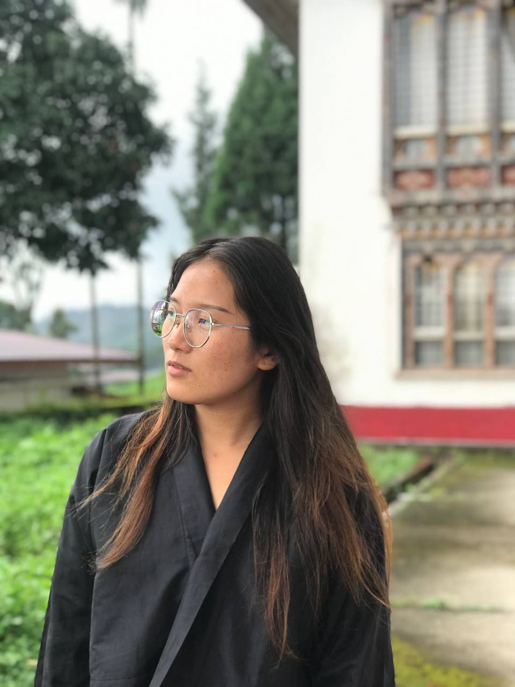

About Me
Hi! I am Dechen Wangmo, from Wonbugang, Trashigang. I love reading books, exploring new ideas, and learning about different cultures. I am the youngest of my siblings and I am a Buddhist. I enjoy writing, playing online games, and problem-solving in my daily life. Friends and family describe me as curious, hardworking, and always eager to learn. In my free time, I like to spend time listening music, reflect, and challenge myself with new experiences. I believe in lifelong learning and growing through every opportunity.